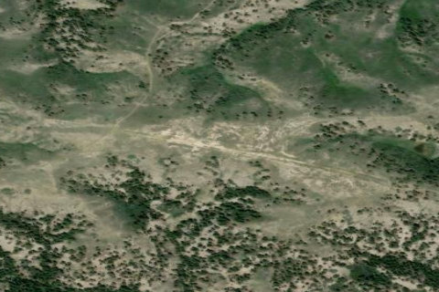

LEFT COULEE, MT
MT

Aerial imagery source: Esri, Vantor, Earthstar Geographics, and the GIS User Community
| State | MT |
|---|---|
| Elevation | 3,125 ft |
| CTAF | 122.9 |
| Coordinates | 47.885482, -109.022553 |
Notes
[shortfield] Location Overview Left Coulee is one of six primitive backcountry airstrips inside the Upper Missouri River Breaks National Monument, a roughly half-million-acre, 149-mile-long stretch of rugged "broken land" along the Upper Missouri River in north-central Montana, between Winifred and Lewistown. It sits on the north side of the river in the Bullwhacker area, alongside sister strips Bullwhacker, Cow Creek, Black Butte North, Knox Ridge, and Woodhawk. Like its neighbors, it's a turf/dirt strip at roughly 3,000–3,100 feet elevation, reachable on the ground only by primitive two-track roads connecting into more than 50 miles of BLM routes — access into the strip from the north via Cow Creek is seasonal, open June 16 through November 30 to protect sage-grouse and big game during sensitive periods. Camping & Recreation There are no developed facilities here — no water, restrooms, or services — just primitive, dispersed "dry camping" right at the strip for pilots and backcountry travelers. The appeal is the setting itself: short day hikes through the Breaks, sweeping views of coulees and badlands, and a real chance of spotting elk, mule deer, pronghorn antelope, upland game birds, and the bighorn sheep the area is known for. Many pilots treat Left Coulee as one stop on a tour of the half-dozen Breaks airstrips, and the Recreational Aviation Foundation and Montana Pilots Association host an annual Missouri River Breaks Fly-In each June out of nearby Winifred. Notes & Warnings Soil here is classic Breaks "gumbo" — slick as grease when wet and hard as concrete once it dries, so pilots are strongly cautioned never to land on a wet surface. Cattle and wildlife can leave ruts in the strip that harden after rain, so inspect the surface before committing to land. The area lies under the Hays Military Operations Area, so expect the possibility of military jet/bomber training traffic overhead. Weather reporting nearby is sparse to nonexistent — self-briefing and conservative go/no-go decisions are essential. This is genuinely remote, low-key backcountry flying: no fuel, no maintenance, and minimal services for many miles, so come prepared and practice no-trace camping. History Left Coulee and its sister airstrips predate the Upper Missouri River Breaks National Monument itself, having served ranchers and other backcountry users for generations before the monument was proclaimed in January 2001. After that proclamation, environmental groups pushed to close roads and airstrips across the monument, a fight that helped spur the founding of the Recreational Aviation Foundation. RAF co-founder Chuck Jarecki and local advocates — including Montana Pilots Association members — worked with the BLM, even tracking down historic photographs to document the strips' long-standing use, and helped shape a management plan that preserved them for recreational access. That plan was challenged in court by conservation groups in 2009, but a federal district court sided with the BLM in 2011, affirming the multiple-use approach that kept Left Coulee and the other Breaks strips open. More recently, a 2023–2024 BLM travel-plan decision formalized seasonal motorized access to the area via a short connector road tied to a public access agreement with local landowners, reflecting the ongoing collaboration between pilots, ranchers, and federal land managers to keep this corner of the Breaks open to backcountry recreation.